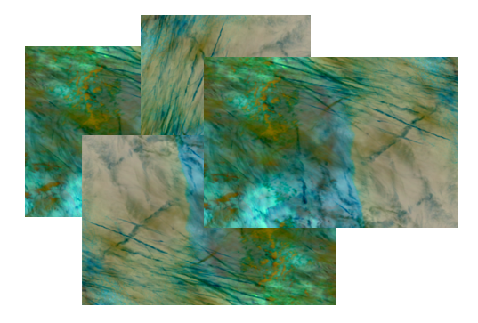
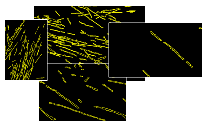
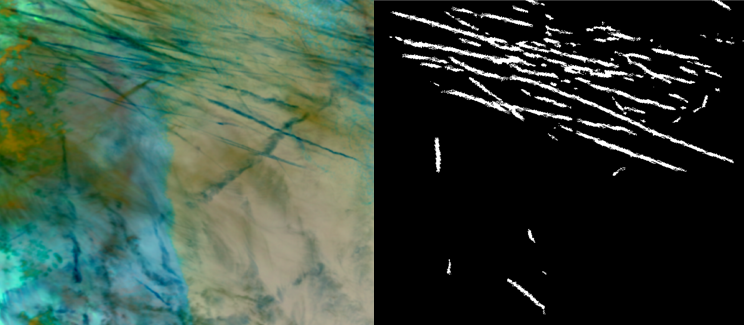

Pipeline
The current investigation pipeline takes raw VIIRS Level-1B granules, maps the bands that are closest to the ABI equivalents required by the model via a lightweight adapter (viirs_adapter.py), applies VIIRS-derived normalization statistics, and runs the unmodified mcast detection model. The output is a float32 probability map — no threshold is applied at inference time, so the detection threshold can be swept interactively without re-running the model. Two model versions are being evaluated: detection-1.1 (initially trained by Vincent Meijer) and marvelous-moth-137 (trained by Téo Bloch).
MOD granules
normalization
detection-1.1marvelous-moth-137outputs
against
labels

from
IMG productstandardization values
a range of VIIRS swaths
Channel mapping
The detection model takes three inputs: ABI channels C11, C14, and the brightness temperature difference C13−C15. VIIRS bands are mapped to these as closely as possible. The M-band product (moderate resolution; 750 m at nadir) lacks a channel near 11 µm, so M15 (10.76 µm) substitutes for both C13 and C14. The I-band product (imaging resolution; 375 m at nadir) adds I5 at 11.45 µm — a much closer match to C14 (11.2 µm) — but requires a second data product and reprojection onto the lower-resolution M-band grid.
| ABI channel | Center wavelength | Closest VIIRS channel | Center wavelength |
|---|---|---|---|
| C11 | 8.4 µm | M14 | 8.55 µm |
| C13 | 10.3 µm | M15 | 10.76 µm |
| C14 | 11.2 µm | M15 | 10.76 µm |
| C15 | 12.3 µm | M16 | 12.01 µm |
| ABI channel | Center wavelength | Closest VIIRS channel | Center wavelength |
|---|---|---|---|
| C11 | 8.4 µm | M14 | 8.55 µm |
| C13 | 10.3 µm | M15 | 10.76 µm |
| C14 | 11.2 µm | I5 | 11.45 µm |
| C15 | 12.3 µm | M16 | 12.01 µm |
Grey-shaded rows contribute to the BTD (C13−C15) input. The I5 channel (right table, highlighted in red) is a closer spectral match to ABI C14 than M15, but requires the additional 375 m I-band product and reprojection onto the M-band grid.
Bowtie handling & detection performance
VIIRS M-band L1B data contains bowtie deletion zones — pixels removed where adjacent scan lines overlap at high viewing angles. About 13% of pixels are invalid, concentrated in the left and right thirds of each swath in repeating 4-row gaps. Unhandled, NaN values propagate through the model's convolutional layers and suppress all detections across ~80% of the swath width.
Three strategies were tested, each improving substantially on the last. The current fix — along-track interpolation — fills each 4-row gap by column-wise linear interpolation using the nearest valid pixels above and below, a physically reasonable approximation given the small spatial extent (~3 km) of each gap.
| Bowtie handling | Precision | Recall | F1 | IoU |
|---|---|---|---|---|
| None (NaN propagation) | 0.587 | 0.053 | 0.097 | 0.051 |
| Band-mean fill | 0.391 | 0.318 | 0.351 | 0.213 |
| Along-track interpolation (current) | 0.491 | 0.365 | 0.419 | 0.265 |
Pixel-wise metrics for detection-1.1 model run on Scene 01 (part of val set), zero-shot with M15 as C14 substitute. No threshold tuning applied.

Labeled dataset
12 manually labeled VIIRS scenes are available, covering both NOAA-20 and Suomi-NPP, daytime and nighttime overpasses. All model inputs are thermal infrared channels with no solar-reflectance dependency, so day/night does not affect data values directly — it serves mainly as a proxy for viewing geometry. The dataset is split to keep tuning (threshold selection, normalization) on val only, with train and test locked until tuning is complete.
| Split | Scenes | Satellites | Overpass |
|---|---|---|---|
| Val | 1, 7 | NOAA-20, Suomi NPP | 2 day |
| Train | 2, 3, 5, 6, 8, 10, 11 | NOAA-20 ×4, Suomi NPP ×3 | 6 day, 1 night |
| Test | 4, 9, 12 | NOAA-20 ×2, Suomi NPP ×1 | 2 day, 1 night |
Splits are stratified by satellite and overpass type. The single night scene in train (scene 6) ensures tuning sees both overpass types; scene 9 (night) is reserved as an out-of-distribution test.
Threshold explorer
Drag the slider to set a detection threshold and see how it moves the operating point along the precision–recall curve — and how the actual detection mask changes across two held-out val scenes. All four model variants are shown simultaneously on the curve; select one to update the scene previews. Yellow outlines are the manually labeled contrail boundaries.
Next steps
- Normalization comparison. VIIRS-derived normalization statistics have been computed from 48 stratified CONUS swaths. Next: compare detection performance with VIIRS stats vs. ABI training stats to quantify the impact of distribution shift.
- I5 channel for C14. I5 (11.45 µm) is a closer spectral match to ABI C14 (11.2 µm) than M15 (10.76 µm). The full pipeline is implemented; pending re-download of 2 missing IMG geolocation files and a re-run of
compute_norm_statsto produce the I5 statistics file. - Fine-tuning. The output layer of
marvelous-moth-137has been fine-tuned on the VIIRS train split. Initial results are included in the threshold explorer above.